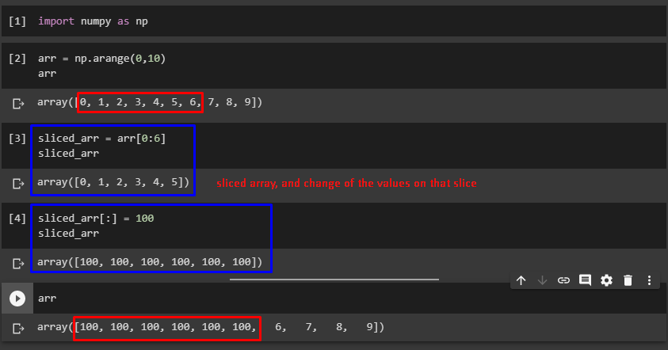
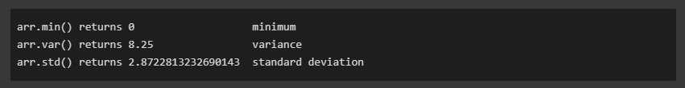

Numpy Crash course
This notes are notes for the Numpy crash course.
Numpy is a linear library for Python, it is an essential building block for other PyData ecosystem ( Pandas, scipy, scikit-lean, etc)
Using NumPy
Normally numpy is import as np
NumPy Arrays
NumPy came in vector and matrices, Vectors are 1 dimension, matrix are 2D dimensions.
Create NumPy Arrays
we can create an array from a python list
| my_list = [1,2,3]
np.array(my_list)
# array([1, 2, 3])
|
and can be a list of list as well
| my_matrix = [[1,2,3],[4,5,6],[7,8,9]]
np.array(my_matrix)
#array([[1, 2, 3],
# [4, 5, 6],
# [7, 8, 9]])
|
Build-in Methods
arange
Return evenly spaced value within a given interval
| np.arange(0,10)
# array([0,1,2,3,4,5,6,7,8,9])
np.arange(0,11,2)
# array([0, 2, 4, 6, 8, 10])
|
zeros and ones
Generate vectors or matrix of zeros or ones
| np.zero(3)
# array([0. , 0. , 0.])
np.zero((5,5))
# array([[0., 0., 0., 0., 0.],
# [0., 0., 0., 0., 0.],
# [0., 0., 0., 0., 0.],
# [0., 0., 0., 0., 0.],
# [0., 0., 0., 0., 0.]])
np.ones(3)
# array([1., 1., 1.])
np.ones((3,3))
# array([[1., 1., 1.],
# [1., 1., 1.],
# [1., 1., 1.]])
|
linspace
Return evenly spaced numbers over a specific interval
| np.linspace(0,10,3)
# array([0., 5., 10.])
np.linspace(0,5,20)
# array([0. , 0.26315789, 0.52631579, 0.78947368, 1.05263158,
# 1.31578947, 1.57894737, 1.84210526, 2.10526316, 2.36842105,
# 2.63157895, 2.89473684, 3.15789474, 3.42105263, 3.68421053,
# 3.94736842, 4.21052632, 4.47368421, 4.73684211, 5. ])
#Note that .linspace() includes the stop value. To obtain an array of common fractions, increase the number of items:
np.linspace(0,5,21)
# array([0. , 0.25, 0.5 , 0.75, 1. , 1.25, 1.5 , 1.75, 2. , 2.25, 2.5 ,
# 2.75, 3. , 3.25, 3.5 , 3.75, 4. , 4.25, 4.5 , 4.75, 5. ])
|
eye identity matrix
Create a identity matrix
| np.eye(4)
# array([[1., 0., 0., 0.],
# [0., 1., 0., 0.],
# [0., 0., 1., 0.],
# [0., 0., 0., 1.]])
|
Random
Here some of the ways we can create random numbers
rand
Creates an array of the given shape with random uniform distribution over [0,1)
| np.random.rand(2)
# array([0.37065108, 0.89813878])
np.random.rand(5,5)
# array([[0.03932992, 0.80719137, 0.50145497, 0.68816102, 0.1216304 ],
# [0.44966851, 0.92572848, 0.70802042, 0.10461719, 0.53768331],
# [0.12201904, 0.5940684 , 0.89979774, 0.3424078 , 0.77421593],
# [0.53191409, 0.0112285 , 0.3989947 , 0.8946967 , 0.2497392 ],
# [0.5814085 , 0.37563686, 0.15266028, 0.42948309, 0.26434141]])
|
randint
This generate a integer from low (inclusive) to high (exclusive)
| np.random.randint(1,100)
#61
np.random.randint(1,100,10)
# array([39, 50, 72, 18,27, 59, 15, 97, 11, 14])
|
seed
It is use to create a random state that can be reproducible, i means, the result will be the same everything we use the same seed
| np.random.seed(42)
np.random.rand(4)
# array([0.37454012, 0.95071431, 0.73199394, 0.59865848])
np.random.seed(42)
np.random.rand(4)
# array([0.37454012, 0.95071431, 0.73199394, 0.59865848])
|
Array Attributes and Methods
To explain the attributes and methods we need to create a vector and matrix
| arr = np.arange(25)
# array([ 0, 1, 2, 3, 4, 5, 6, 7, 8, 9, 10, 11, 12, 13, 14, 15, 16,
# 17, 18, 19, 20, 21, 22, 23, 24])
ranarr = np.random.randint(0,50,10)
# array([38, 18, 22, 10, 10, 23, 35, 39, 23, 2])
|
Reshape - reshape
Return the same data of the vector or matrix but in a different shape
| arr.reshape(5,5)
# array([[ 0, 1, 2, 3, 4],
# [ 5, 6, 7, 8, 9],
# [10, 11, 12, 13, 14],
# [15, 16, 17, 18, 19],
# [20, 21, 22, 23, 24]])
|
max, min, argmax, argmin - max,min,argmax,argmin
Let start with ranarr
| ranarr = np.random.randint(0,50,10)
# array([38, 18, 22, 10, 10, 23, 35, 39, 23, 2])
|
the maximum number in the array
the index of this maximum number
now for the minimum
| ranarr.min()
# 2
ranarr.argmin()
# 9
|
Shape - shape
shape is an attribute and not a method
| # Vector
arr.shape
#(25,)
# Notice the two sets of brackets
arr.reshape(1,25)
# array([[ 0, 1, 2, 3, 4, 5, 6, 7, 8, 9, 10, 11, 12, 13, 14, 15,
# 16, 17, 18, 19, 20, 21, 22, 23, 24]])
arr.reshape(1,25).shape
# (1, 25)
arr.reshape(25,1)
#array([[ 0],
# [ 1],
# [ 2],
# [ 3],
# [ 4],
# [ 5],
# [ 6],
# [ 7],
# [ 8],
# [ 9],
# [10],
# [11],
# [12],
# [13],
# [14],
# [15],
# [16],
# [17],
# [18],
# [19],
# [20],
# [21],
# [22],
# [23],
# [24]])
arr.reshape(25,1).shape
# (25, 1)
|
dtype
In order to know the data type of the object
| arr.dtype
# dtype('int32')
arr2 = np.array([1.2, 3.4, 5.6])
arr2.dtype
#dtype('float64')
|
Numpy Indexing and Selection
To select an item in the array we can use a syntax similar to the one use to pick up elements of a list, in the following example we will:
1. Create an array
| import numpy as np#create an array
arr = np.arange(0,11)
|
2. Select a single element
3. Select a range of elements
| arr[0:5]
#array([0,1,2,3,4])\
|
Broadcasting
The differences between Python list and Numpy arrays can be simplify as; python list you can only reassign values to part of the list with the same size and shape, if you want to replace X number of elements you will need to pass in a new x element list, this is explain better with an example.
In the example:
1. Create an array.
2. Slice part of the array.
3. We will change the sliced array.
4. Display the original array.
Notice the elements of the array, that belong to the sliced array, were change. This is because the data is not copied in order to avoid memory problems.

| import numpy as np
#create an array
arr= np.arange(0,10)
#slice the array
sliced_arr = arr[0:6]
#change the values in the slice
sliced_arr[:] = 100
# print the original array to show the changes
print(arr)
#array([100, 100, 100, 100, 100, 100, 6, 7, 8, 9])
|
If you want to make a copy of the array you can use copy() like new_arr = arr.copy()
Indexing 2d arrays (matrices)
The syntax will be arr_2d[row][col] or arr_2d[row,col], the latter the most common used.
1. Create the matrix
| import numpy as np
arr_2d = np.arange([5,10,15],[20,25,30],[35,40,45])
|
2. Select base in index
a row
| arr_2d[1]
#array([20,25,30])
|
3. select a matrix inside the matrix
| arr_2d[:2,1:] # top right corner
# array([25,30],
# [40,45])
|
Conditional selection
We can select elements of the arrays base in a condition, let say we want to know what elements are bigger than 4.
| import numpy as np
arr = np.arange(0,10)
print(arr>4)
#array([False, False, False, False, True, True, True, True, True,
# True])
|
| bool_arr = arr>4
arr[bool_arr]
# array([ 5, 6, 7, 8, 9, 10])
arr[arr>4]
# array([ 5, 6, 7, 8, 9, 10])
|
Operations
Arithmetic
Numpy allows operation including matrix with matrix and scalar with matrix.
1. Addition, multiplication , subtraction and division
| import numpy as np
arr = np.arange(0,10)
arr
#array([0, 1, 2, 3, 4, 5, 6, 7, 8, 9])
#addition
arr + arr
#array([ 0, 2, 4, 6, 8, 10, 12, 14, 16, 18])
# Multiplication
arr * arr
#array([ 0, 1, 4, 9, 16, 25, 36, 49, 64, 81])
#Subtraction
arr - arr
#array([0, 0, 0, 0, 0, 0, 0, 0, 0, 0])
#Division
arr/arr
#array([nan, 1., 1., 1., 1., 1., 1., 1., 1., 1.])
|
numpy will notify us when the division is not possible or the division by 0
| 1/arr
#array([ inf, 1. , 0.5 , 0.33333333, 0.25 ,
# 0.2 , 0.16666667, 0.14285714, 0.125 , 0.11111111])
|
and we have the exponential as well
| arr**3
#array([ 0, 1, 8, 27, 64, 125, 216, 343, 512, 729])
|
Universal Array function
With Numpy we can perform different function to the matrices, square root, logarithmic and geometric functions.
| np.sqrt(arr)
#array([0. , 1. , 1.41421356, 1.73205081, 2. ,
# 2.23606798, 2.44948974, 2.64575131, 2.82842712, 3. ])
# Exponential (e^)
np.exp(arr)
#array([1.00000000e+00, 2.71828183e+00, 7.38905610e+00, 2.00855369e+01,
# 5.45981500e+01, 1.48413159e+02, 4.03428793e+02, 1.09663316e+03,
# 2.98095799e+03, 8.10308393e+03])
#Trigonometric
np.sin(arr)
#array([ 0. , 0.84147098, 0.90929743, 0.14112001, -0.7568025 ,
# -0.95892427, -0.2794155 , 0.6569866 , 0.98935825, 0.41211849])
#Natural Logarithm
np.log(arr)
#array([ -inf, 0. , 0.69314718, 1.09861229, 1.38629436,
# 1.60943791, 1.79175947, 1.94591015, 2.07944154, 2.19722458])
|
Statistics
as an example of the statistic function that can be perform in numpy we have sum, mean and max
| arr = np.arange(0,10)
arr.sum()
#45
arr.mean()
#4.5
arr.max()
#9
|
and other examples of statistic functions

Axis Logic
Wen we work with 2D arrays (Matrix) the array term , axis 0 is the vertical axis ( rows ), and axis 1 is the horizontal ( columns )
so let do sum on the 0 axis, basically sum all the elements vertically, it make sense after the code.
| arr_2d = np.array([[1,2,3,4],[5,6,7,8],[9,10,11,12]])
arr_2d
#array([[ 1, 2, 3, 4],
# [ 5, 6, 7, 8],
# [ 9, 10, 11, 12]])
arr_2d.sum(axis=0)
#array([15, 18, 21, 24])
#[(1+5+9), (2+6+10), (3+7+11), (4+8+12)]
arr_2d.sum(axis=1)
#array([10, 26, 42])
|